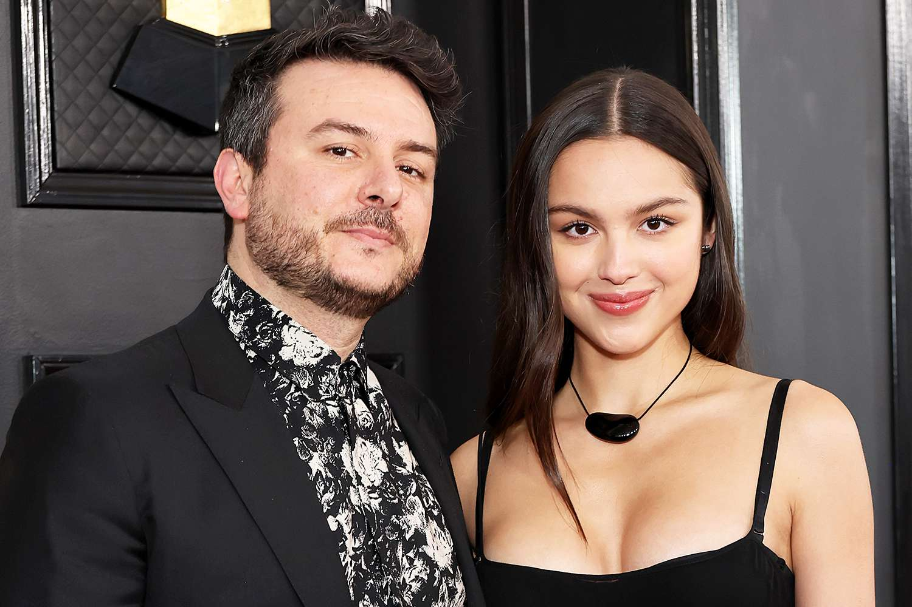

El salto a la música
Aunque Olivia ya había cantado durante su etapa como actriz, su carrera musical como artista solista comenzó realmente en 2021. El lanzamiento de “drivers license” fue decisivo. La canción llegó al primer puesto del Billboard Hot 100 y alcanzó una enorme cantidad de reproducciones. El éxito fue tan rápido que Olivia tuvo que adaptarse en poco tiempo a una industria completamente diferente. Ya no era solamente una actriz de televisión: ahora debía construir una identidad como artista musical.

El éxito de SOUR
El lanzamiento de SOUR confirmó que el éxito de “drivers license” no había sido casual. El álbum consiguió gran repercusión internacional y convirtió a Olivia en una de las artistas jóvenes más importantes del momento. Además de las ventas y reproducciones, recibió reconocimiento de la crítica y de importantes premios musicales. Los Grammy de 2022 fueron uno de los momentos más destacados. Olivia obtuvo siete nominaciones y ganó tres premios.
El desafío del segundo álbum
Después de un debut tan exitoso, uno de los mayores desafíos para Olivia era decidir cómo continuar. En lugar de intentar hacer otro SOUR, eligió cambiar parte de su sonido. Con GUTS, aumentó la presencia de guitarras, baterías y elementos del rock. También incorporó canciones con un tono más irónico y divertido. Esto ayudó a demostrar que no dependía de un único estilo.
Sus presentaciones en vivo
Otra parte importante de su carrera son sus conciertos. Durante sus presentaciones, Olivia no solamente canta, sino que también toca instrumentos y utiliza diferentes recursos escénicos para acompañar las canciones. La GUTS World Tour fue especialmente importante porque llevó su música a distintos países y permitió que una gran cantidad de seguidores pudiera verla actuar en directo. La gira también ayudó a consolidar su imagen como artista en vivo, no solamente como cantante de estudio.
Daniel Nigro
Uno de los nombres más importantes detrás de su música es Daniel Nigro. Nigro trabaja como productor y compositor y colaboró con Olivia en gran parte de sus canciones. Su trabajo conjunto ayudó a crear un sonido reconocible que mezcla elementos del pop moderno con guitarras y estructuras inspiradas en el rock. La relación entre ambos también demuestra que la creación de una canción suele ser un trabajo colaborativo. Aunque Olivia es la intérprete principal, detrás de sus canciones participan productores, músicos, ingenieros y otros profesionales.

Una evolución constante
La carrera de Olivia puede dividirse en varias etapas. Primero estuvo su período como actriz. Después llegó el comienzo de su carrera musical con SOUR. Luego apareció una etapa más experimental y rockera con GUTS. Finalmente, en 2026 comenzó una nueva fase con su tercer álbum. Cada etapa fue agregando elementos diferentes a su identidad artística.